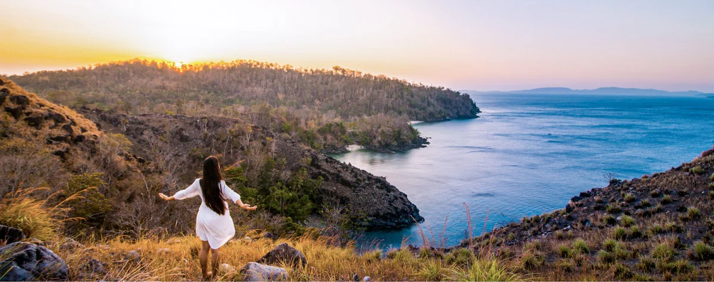
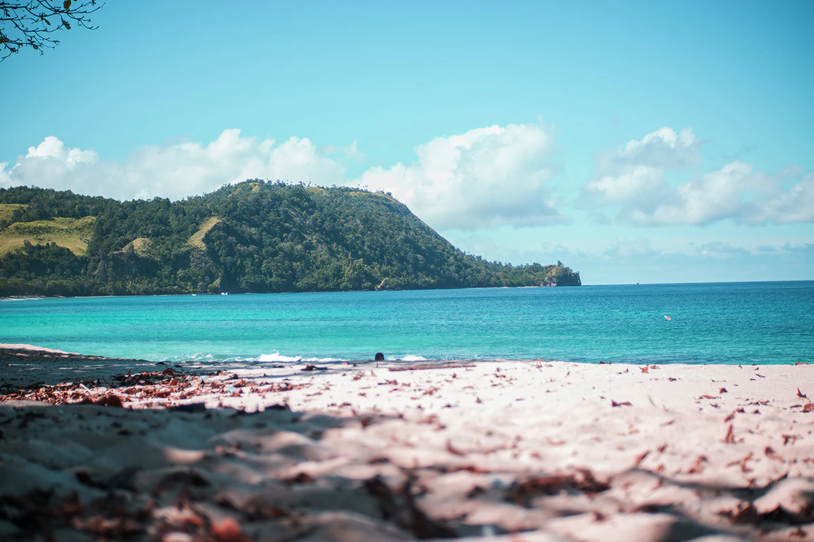

Likupang Beach: Introducing another Beautiful Place in Indonesia

North Sulawesi is a province in Indonesia that is well known for its stunning natural attractions.
The beaches, the mountainous areas, and lush forests are the highlights that make this
destination special. One of the best places you can find here is Likupang Beach. The
beach is located in the northernmost part of Sulawesi and is just 48 km away from Manado,
specifically in a district called Likupang.
From the first time you lay eyes on Likupang Beach, you will be stunned by its marvelous and vast
white sandy beach. It also has beautiful clear seawater and also offers several other tourist
attractions. In addition, you can also dive to witness the underwater scenery that will hypnotize
you.
From Manado, you can use public transportation from Paal bus station, and the bus will take you
directly to the Likupang bus station. If you travel in groups you better use your own vehicle
or choose a car rental service since this beach is relatively far away from the heart of the city.

Main Attractions in the Area
The white sandy beach along with the pristine water that aligns with the green hills seen from a
distance is already enough for Likupang Beach to take your breath away. Here, you can snorkel,
dive, and also fish around the area.
The crystal clear water has once stunned locals and Indonesia’s World Wildlife Fund in 2007
because a green sea turtle was seen in the area. The presence of a rare species like this is
a sign that the ocean ecosystem of Northern Sulawesi is in a good condition. Due to these
clear waters, it is a favorite place for people to dive and snorkel in.
LParadise Water Sports at the Casabaio Paradise Resort is a beloved tourist attraction near
the beach. Like the game show “Ninja Warrior”, where you can jump on trampolines that are
right on the surface of the water! Therefore, if you fall, you dive into the beautiful
blue waters. Not only do you get to jump around for fun, but you can also choose from a
wide range of water sports like jet skis, banana boat, and many others.
Interesting Place Nearby
There are several beaches around Likupang that you might want to visit such as Pal Beach and Pulisan Beach. The beach along the bay is usually used as a spot for diving, especially by international travelers. If you go for another adventure you can go to Lihaga Island and Gangga Island as they also have amazing underwater scenery.